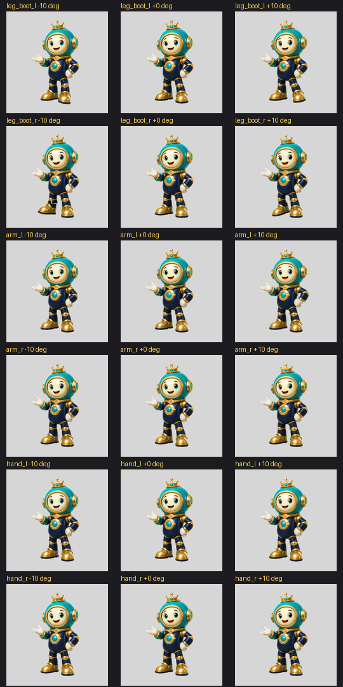
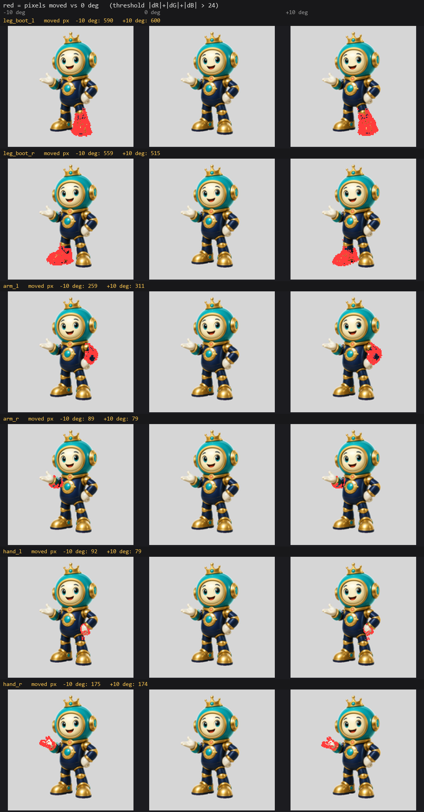

一、問題：被遮住的那一半
The Hidden Half
會畫整張不等於會拆件：認件那關近乎解決，牆是被擋住的那一半，後面還有機械問題，轉起來才暴露，最後是動作意圖，圖裡根本沒有。
疑惑
AI 整張角色圖都畫得出來，臉、盔甲、光影都對。為什麼拆成 Spine 分層還是不行？
主張
會畫整張不等於會拆件：認件那關近乎解決，牆是被擋住的那一半，後面還有機械問題，轉起來才暴露，最後是動作意圖，圖裡根本沒有。
三分鐘版
生圖模型整張角色都畫得出來，照理說拆成 Spine 分層是小事。實際拆出來的件，不是破就是歪。
差在哪？整張圖只要看起來對就好；分層是每一件都要真的對。多出來四個要求：每一件要完整，被擋住的部分也要有；位置要準，放回去對得上；前後要對，誰壓誰不能錯；還要能動，關節轉開不能破。
第一關其實不難了。「哪些像素屬於哪件」，可指示的分割模型處理得掉：我們實測一隻角色，十二件全圈出來，遮罩蓋滿、沒有出界。
牆在看不到的地方。被手擋住的軀幹長什麼樣，圖裡沒有答案。畫的人補得出來，因為這隻角色的 3D 在他腦裡，袖子後面是什麼，他知道；模型沒有留在腦裡的 3D，每次都整張重猜，猜出來彼此對不齊。我們實測過：讓模型把零件一件一件補，二十九張輸出，角度、材質、形狀各飄各的。
就算補得像，還有兩關。件轉起來破不破、誰壓誰對不對，靜態圖上看不出來，要裝上骨架轉開來量。最後一關圖裡根本沒有：這隻角色要做什麼動作、拆到多細才夠用，答案在動畫需求裡，不在圖裡。
所以這條研究線不等模型變強：把前三關變成可以量的結構，人只留否決權。機器長什麼樣，下一章講。
推導
分層跟整圖差在哪
整張圖是一個平面，錯了也只是「有點怪」。分層是一組零件，每一件都要各自成立：完整、定位、前後、可動，四個要求缺一個，動起來就穿幫。四個要求對應四道關，難度差很遠，混在一起談，結論不是「AI 就是不行」就是「AI 馬上就行」，兩個都錯。分開驗，才知道錢和力氣該花在哪一關。
第一關：認件，已經不難
「哪些像素屬於哪件」，可指示的分割模型處理得掉。實測收據：一隻測試角色十二件一件不缺，遮罩聯集蓋滿前景（IoU 1.0，IoU 是兩塊形狀的重合率）、出界 0.0。不過「不難」不等於「不用人」：那套遮罩磨了十三次才定稿，人還是要跟在後面修語意，只是這關修得完，也修得快。
第二關：被擋住的結構
畫的人拆件時做了一件事，自己不會特別意識到：把被手擋住的袖子直接畫完，因為他知道袖子長什麼樣。這個「知道」是多年練出來的，腦裡有那隻角色的立體形，投影回紙上。模型沒有這個留存的 3D 狀態，每次生成都是重新猜一張整圖，局部都像，彼此對不齊；檢查的代理只拿得到一張平面圖，也驗不了它看不到的東西。收據：零件獨立重生二十九張，角度、材質、形狀各飄各的，整批被打回。這關要的不是更會畫的模型，是一個明確的 3D 表示，讓「後面是什麼」變成查得到的東西。
第三關：轉起來才量得到
支點放哪、誰壓誰、關節要留多少重疊，靜態圖上全看不出來。只有一種判法：把件裝上骨架，轉到宣告的最大角度，量。我們的做法是六個關節各掰到正負極限，連同原姿勢排成十八格，數破洞和接縫的像素；那張壓力圖就是這關的長相。這關不是模型問題，是量測問題，機器反而最擅長。
第四關：圖裡沒有的答案
這隻角色要做哪些動作、手要不要跟身體分開、拆到多細才夠用，答案不在圖裡，在動畫需求裡。沒有需求單，連資深的人都拆不出「正確」的件。所以件的清單不讓任何人臨場判斷：目標骨架的槽位清單就是契約，動作清單由題材慣例加參考量測提出，人拍板。
這條研究線的做法
四道關裡，一、三是工程，二是研究，四是需求管理。做法是把一到三關全部變成可以量的結構（範圍、深度、可見性、未知區，每件四張證據），人從「動手拆」退到「看證據、下否決」。這台機器長什麼樣、為什麼模型換代它不用重做，下一章講。
輪到你了
這章你是畫的人。回想上一次拆件：Photoshop 開著，套索圈到被擋住的袖口，你沒停下來查資料，直接把看不見的那段畫完，因為你知道它長什麼樣。這條研究線要做的，就是把你這個「知道」變成機器查得到的結構。你手上的工作不變。對位、量重疊、驗破洞，這幾樣你本來就懶得做，現在歸機器管。
收據
-
問題四層的原始定義（架構總綱）
docs/superpowers/specs/2026-07-30-3d-spine-agent-northstar.md -
認件實測（12/12、IoU 1.0）與全部原始數字
docs/superpowers/specs/2026-07-30-character-3d-to-2d-pilot-result.md -
零件獨立重生的漂移紀錄（二十九張）
docs/superpowers/specs/2026-07-31-tidekeeper-master-image-cycle-design.md -
十八格關節壓力圖（第三關的長相）

-
上圖的位移對照（±10° 是宣告的極限角度，每格實際位移 79〜600 像素、約 0.3%〜2.1%，縮圖上接近不可見；紅色＝該格相對 0° 真正動到的像素，判法與門檻在產圖腳本裡）

失敗現場
早期一次交十五格動作全家福，操作者一眼掃過，只說得出「都歪了」，哪裡歪講不出來，那一輪審查我們什麼都沒學到。
沉澱出來的規則：一次只交最小可判的東西；打回要圈座標，不收一句「重來」。